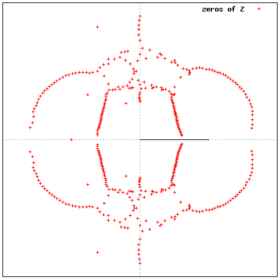

BACK
Partition Function Zeros
This page is under construction.
The initial idea was to provide some notes that would be of interest to
my graduate student
Yogi Valani,
who
was studying Potts model partition
functions using transfer matrix algebra techniques (mainly computer based).
(Yogi has successfully completed his PhD, but I'll leave the notes up,
since
they may eventually be of interest to others too.)
The aim is to study
the way in which equilibrium statistical mechanics models
phase transitions (possibly multiple), by studying the
distribution of zeros of the partition function Z
in the complex T plain close to phase transition point.
This is typically done by studying the exactly computed partition function
on finite lattices (arranging for the Hamiltonian to be integral, so that
Z is polynomial in exp(beta), where beta=1/kT).
This programme is comprehensively explained in the literature.
But this literature is
spread far and wide, and some of it is hard work.
Accordingly, this
page will take the form, in part, of
(1) a kind of FAQ.
The assumption is that the reader has _seen_ the literature,
but that some further explanation is useful.
(2) a collection of results and pointers to results.
(So email me if you want me to add something relevant.)
For example,
The figure on the right is for a clock model not a Potts model,
and animates the zero distribution over 3 different lattice sizes
(see later for details).

References
My main reference (just because it is something that does the job,
and that I am familiar with) is:
[M91] P Martin, Potts models and related problems in statistical mechanics,
World Scientific 1991.
For others follow the link to references.
Definitions
At its simplest,
the Potts model partition function Z can be considered to be a map from pairs
consisting of a natural number and a graph, to polynomials.
That is, for each such pair there is a polynomial.
See
here.
However, the graph in question is a representation of a physical system,
such that the number of vertices is of order 10^26
(that is, of the order of Avogadro's number).
No interesting Z can be computed for a graph of this size.
In practice, then, it is necessary to compute Z for a
sequence of graphs approaching (in some sense) a limit,
such that the large graph of interest may be studied by studying the limit.
This may sound hopeless, but a good model for this situation is given in [M91]
Chapter 11. There one considers a certain sequence of graphs.
Connections to physics
Here.
Generalities
What does a Potts model partition function look like, as a polynomial?
Here is an example.
Library of zeros data, model by model (under construction)
- 1d Ising model, and generalities
- 2d Ising model -- The control case (via Onsager's solution)
- 3d Ising model (many results included here
are courtesy of Y Valani [V11])
- Q-state Potts models
- 2d, square lattice
(e.g.
here
, [M91]) / other lattices
- Q=3
/other
/other
(triangular and square up to size 12x13 with P/O boundaries)
here
- Q=4
- Ice model realisation [M86] (up to 10x20)
- 3d
- Clock models [M91,M88]
Computation
Some code snippets to follow.
zeros (c) Paul Martin